|
This is unreleased documentation for SUSE® Virtualization v1.9 (Dev). |
Harvester Cloud Provider
You can provision SUSE® Rancher Prime: RKE2 clusters in SUSE® Rancher Prime using the built-in Harvester Node Driver. This component provides load balancer and storage passthrough capabilities to guest Kubernetes clusters.
Main functionalities
The Harvester Cloud Provider (also known as Cloud Controller Manager) implements a subset of the cloudprovider interface defined by k8s.io/cloud-provider.
-
Node metadata discovery and reporting: Dynamically discovers and reports node metadata (such as node names, regions, zones, and IP addresses), acting as a critical bootstrap component for the guest cluster.
-
Load balancer provisioning*: Automatically provisions and configures load balancers for Kubernetes
Serviceobjects (type:LoadBalancer), routing external traffic to the correct guest nodes.
Strictly cloud-native operation
The Harvester Cloud Provider is built on the Kubernetes Cloud Controller Manager (CCM) framework. It operates natively by querying and managing resources directly through the SUSE Virtualization Kubernetes API server:
-
API-driven metadata: Retrieves node metadata (such as
ProviderID, region/zone topology, and IP addresses) by observingVirtualMachineInstance(VMI) status directly from the API server, eliminating host-level commands and hard-coded network interfaces or ports. Using the VMI status as the single source of truth guarantees consistent and deterministic metadata reporting across all nodes, providing a reliable foundation for downstream node lifecycle synchronization and load balancer traffic routing. -
Centralized management: Runs as a standard Deployment rather than a per-node DaemonSet, centrally querying and monitoring virtual machine metadata across the guest cluster via standard Kubernetes API interactions.
-
CCM framework alignment: Uses both standard public flags and extended SUSE Virtualization flags (
--flag) to modularly toggle controllers (standard CCM or custom VMI) and configure networking for complex cluster setups.
Backward compatibility notice
|
Please note a known backward compatibility issue if you’re using the Harvester Cloud Provider version v0.2.2 or higher. If your SUSE Virtualization version is below v1.2.0 and you intend to use newer RKE2 versions (i.e., >= For more informmation, see the Harvester CCM & CSI Driver with RKE2 Releases section of the Support Matrix. |
Deployment
The Harvester Cloud Provider is packaged as an official Helm chart and is natively integrated into the Rancher and RKE2 ecosystem.
-
Automatic deployment (RKE2): When provisioning an RKE2 guest cluster using the Harvester Node Driver, the Harvester Cloud Provider is automatically deployed to the guest cluster during cluster initialization as an RKE2 bootstrap chart.
-
Manual deployment: You can also manually install, upgrade, or customize the provider’s configuration settings using the official Helm chart.
Chart parameters
The following table lists the most common parameters:
| Parameter | Description | Default Value | First Available Version |
|---|---|---|---|
|
Additional CLI flags passed to cloud provider container |
|
0.2.12 |
|
Legacy host path to cloud-config file |
|
0.2.10 |
|
Name of Kubernetes Secret containing cloud-config data |
|
0.2.12 |
|
Key of Kubernetes Secret containing cloud-config data |
|
0.2.12 |
|
Fallback host path to cloud-config file |
|
0.2.12 |
|
Name of target cluster in Rancher |
|
0.2.3 |
|
Enables embedded |
|
0.2.7 |
|
Enables |
|
0.2.7 |
|
Enables leader election for services (required for |
|
0.2.12 |
For information about other configurable parameters, refer to the chart’s values.yaml.
Rancher UI options
The Rancher UI provides dynamic forms driven by the chart’s questions.yaml file. While these forms expose standard settings, you can use the Edit as YAML feature to configure any parameter in values.yaml.
The following image shows the default UI options for Harvester Cloud Provider v0.2.12:
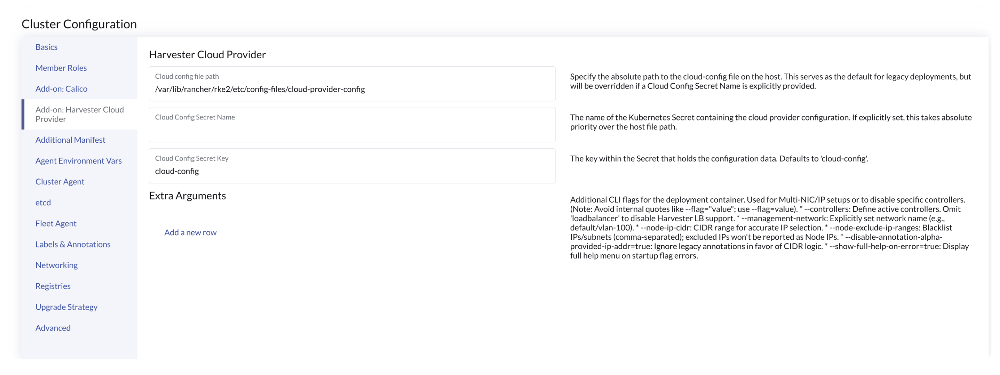
Cluster identifier configuration
The global.cattle.clusterName parameter configures a unique cluster identifier that the Harvester Cloud Provider uses to tag and track resources allocated in the SUSE Virtualization cluster.
global:
cattle:
clusterName: "cgc"How the cluster identifier is set depends on your deployment method:
-
Manual chart deployments: If you deploy or manage the
harvester-cloud-providerchart manually, you must explicitly set a unique name for your cluster. -
Rancher-provisioned clusters: If you deploy an RKE2 guest cluster using the Rancher UI, Rancher automatically injects the cluster’s unique name into
global.cattle.clusterName.In addition, Rancher automatically embeds the
harvester-cloud-providerchart configuration in theClustercustom resource (provisioning.cattle.io/v1). You can edit this resource using the Rancher UI.apiVersion: provisioning.cattle.io/v1 kind: Cluster metadata: name: cgc spec: rkeConfig: chartValues: harvester-cloud-provider: cloudConfigPath: /var/lib/rancher/rke2/etc/config-files/cloud-provider-config global: cattle: clusterName: cgc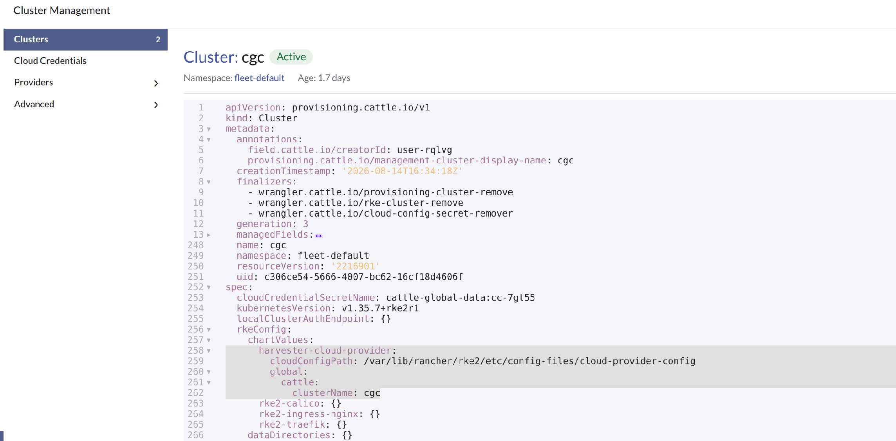
All Harvester Cloud Provider parameters must be nested directly under the
harvester-cloud-providerkey. Pay close attention to YAML indentation, as incorrect formatting can cause Helm to ignore or misinterpret your parameters.When using the Edit as YAML feature on the Rancher UI, the built-in editor automatically checks syntax and highlights indentation errors before you save.
Resource allocation and leakage risks
If the global.cattle.clusterName parameter is missing, the Cloud Controller Manager framework uses kubernetes as the cluster name by default.
Because SUSE Virtualization manages multi-tenant and multi-cluster environments, using this generic name prevents SUSE Virtualization from effectively determining which guest cluster owns specific backing resources (such as load balancers). This can cause resource tracking conflicts, resource leaks, or unexpected resource exhaustion across clusters sharing the same SUSE Virtualization installation.
Starting with Harvester Cloud Provider v0.2.12 and SUSE Virtualization v1.9.0, both harvester-cloud-provider (running in the guest cluster) and harvester-load-balancer (running in the SUSE Virtualization cluster) generate warning logs whenever global.cattle.clusterName is missing or kubernetes is used as the cluster name. If you observe these warning logs, inspect and update your Helm chart parameters immediately.
Parameter alignment and terminology mapping
The cluster identifier is represented by different parameter names depending on where it is configured or referenced.
| Context or Location | Parameter | Alignment Notes |
|---|---|---|
Rancher UI |
|
Set during guest cluster creation. |
Harvester Cloud Provider Helm chart |
|
Configured in |
Harvester Cloud Provider deployment flag |
|
Internal container argument injected into the Harvester Cloud Provider deployment. The Helm chart template automatically converts |
Cloud Config Generation |
|
Parameter specified when generating the cloud-config payload. |
|
Critical alignment requirement Although different components use different parameter names, they all represent the exact same cluster identifier and must strictly match. If these values do not match, the Harvester Cloud Provider will fail to authenticate or properly manage resources in SUSE Virtualization. |
Remote cluster cloud configuration
Harvester Cloud Provider requires a cloud-config payload to connect to the remote SUSE Virtualization cluster for management of virtual machine metadata and load balancers. You can configure this payload using either legacy host-path mounts or Kubernetes Secrets.
File-based cloud configuration (legacy)
This approach relies on mounting the configuration file directly from the SUSE Virtualization node’s filesystem.
-
Default path (
cloudConfigPath): RKE2 automatically injects the configuration file into/var/lib/rancher/rke2/etc/config-files/cloud-provider-configfor the cloud-provider container to access. -
Configuration syntax:
cloudConfigPath: "/var/lib/rancher/rke2/etc/config-files/cloud-provider-config" -
Host path fallback (
cloudConfig.hostPath): This is maintained for backward compatibility and evaluated only ifcloudConfig.secretNameis empty andcloudConfigPathis omitted.
Secret-based cloud configuration (recommended)
This approach uses a Kubernetes Secret to store and manage the configuration payload natively inside the cluster.
cloudConfig:
secretName: ""
secretKey: "cloud-config"
hostPath: "/var/lib/rancher/rke2/etc/config-files/cloud-provider-config"-
Generate and copy the cloud-config content.
You must generate and copy the full string under the
contentkey. This value is already Base64-encoded.The value of
namespacemust match the namespace where the guest cluster is deployed, and the value ofserviceAccountNamemust match the exact cluster name. Mismatched values will prevent the Harvester Cloud Provider from connecting to SUSE Virtualization.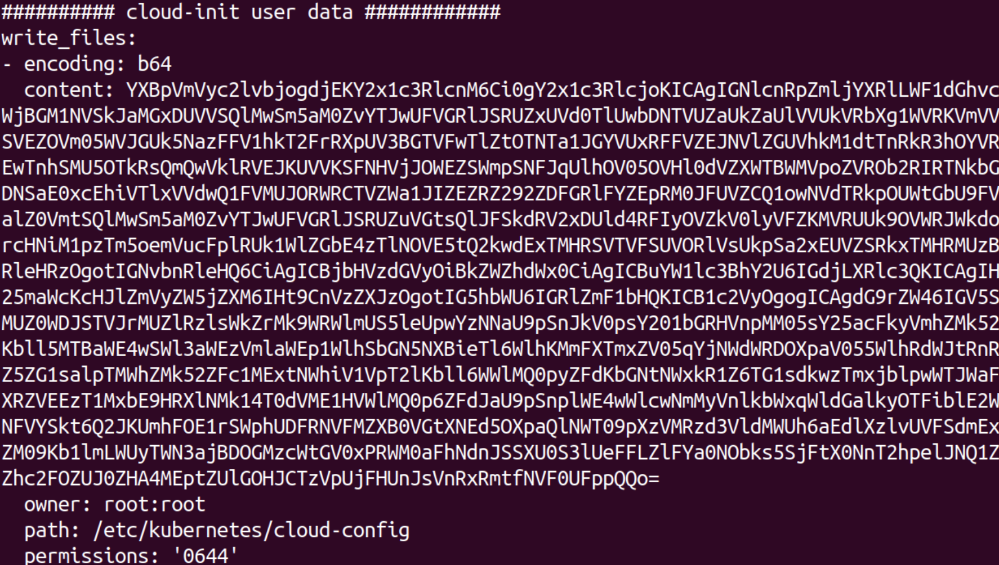
-
Paste the secret manifest during cluster provisioning.
When provisioning the new guest cluster using the Rancher UI, paste the generated secret definition onto the Additional Manifest tab on the Cluster Configuration screen.
apiVersion: v1 kind: Secret metadata: name: hcp-cloud-config namespace: kube-system type: Opaque data: cloud-config: <BASE64_ENCODED_CLOUD_CONFIG>Consider the following requirements when creating the secret:
-
Namespace: The secret must be created in
kube-systemto match the defaultharvester-cloud-providernamespace. -
Secret key: If you use a custom key name instead of the default
cloud-configunderdata, update the Cloud Config Secret Key field on the Addon: Harvester Cloud Provider tab.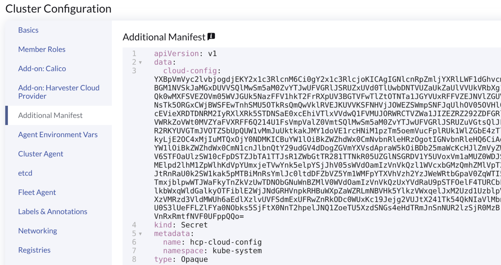
-
-
Reference the secret name in the Harvester Cloud Provider add-on.
Specify the secret name in the Cloud Config Secret Name field on the Addon: Harvester Cloud Provider tab.
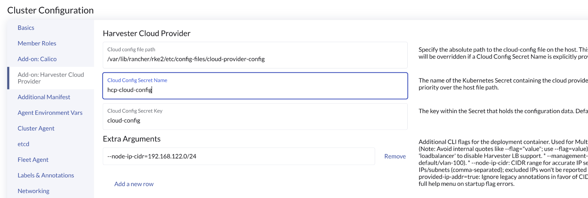
|
In SELinux-enabled clusters, container runtimes enforce strict security context labeling that blocks the Using a Kubernetes Secret eliminates host path dependencies, allowing the pod to access the configuration natively via Kubernetes volume mounts without SELinux permission violations. |
Configuration settings are evaluated in the following order of precedence:
| Parameter | Precedence | Description |
|---|---|---|
|
Highest |
Mounts a Kubernetes Secret and overrides all other settings when set. |
|
N/A |
Specifies the key inside the Secret containing the configuration payload (defaults to |
|
Secondary (legacy default) |
Maintained for backward compatibility; evaluated if |
|
Fallback |
Evaluated only when |
Extra arguments
Built on top of the Kubernetes Cloud Controller Manager (CCM) framework, the Harvester Cloud Provider supports standard upstream CCM flags as well as SUSE Virtualization-specific extended runtime flags. These flags allow you to flexibly tune controller features, networking logic, and system behavior.
|
Prior to v0.2.12, custom flags added directly to the Starting with v0.2.12, the Helm chart natively supports flag configuration via |
Supported flags
The Harvester Cloud Provider supports both standard upstream CCM flags and SUSE Virtualization-specific extended flags.
| Flag | Category | Description |
|---|---|---|
|
CCM framework |
List of CCM controllers to enable (for example, |
|
CCM framework |
Logging verbosity level (for example, |
|
SUSE Virtualization extended |
Disables SUSE Virtualization’s custom VMI controller. |
|
SUSE Virtualization extended |
Prints full CLI help if a flag parsing error occurs at startup. |
|
Networking and IP selection |
Target virtual machine network name used to allocate load balancer IP addresses and report node IP addresses in multi-network environments. |
|
Networking and IP selection |
CIDR range for exact node IP selection in multi-IP address environments. |
|
Networking and IP selection |
Comma-separated list of IP addresses or subnets to exclude from node status reports. |
|
Networking and IP selection |
Disables legacy alpha annotations, forcing the provider to rely strictly on CIDR logic. |
Consider the following usage notes when configuring complex flags:
-
--disable-vmi-controller: The standard--controllersflag only manages upstream CCM controllers. SUSE Virtualization uses a dedicated VMI controller to watch VirtualMachineInstance resources and sync topology changes (such as region and zone updates) to guestNodeobjects. Set this flag tofalseto ensure dynamic topology sync works correctly as detailed in Guest node instance metadata. -
--show-full-help-on-error: By default, the Harvester Cloud Provider silences the upstream CCM’s long help output on startup errors to keep logs clean. Set this flag totrueonly when debugging startup configuration issues. -
--management-network: Essential for environments where guest nodes are attached to multiple VM networks. Setting this flag overrides the default "first-hit" network selection logic.The target SUSE Virtualization cluster must run SUSE Virtualization v1.9.0 or later to support the
--management-networkflag forLoadBalancerservices, designating it as the target load balancer network. Earlier SUSE Virtualization versions fall back tofirst-fitresolution to select the target network. For more information, see Guest Cluster Load Balancer Network Resolution.
Configuration examples
The following examples demonstrate how to configure extraArgs for various deployment scenarios:
Disabling the default load balancer controller
Use this configuration when deploying an alternative to the default load balancer controller of the Harvester Cloud Provider.
extraArgs:
- "--controllers=cloud-node-controller,cloud-node-lifecycle-controller,node-route-controller"|
Because If you keep |
Multi-network and multi-IP configurations (recommended)
When guest cluster nodes use multiple networks, dual-stack IPs, or secondary IPv4 addresses on a single interface, the default first-hit selection logic can cause non-deterministic IP reporting.
The following scenarios demonstrate how to use extraArgs to handle complex networking setups:
Network selection in multi-network environments
-
Scenario: Nodes are attached to multiple SUSE Virtualization VM networks (for example,
default/vlan-100anddefault/vlan-200). -
Default behavior: The provider selects an interface non-deterministically based on discovery order.
-
Goal: Force the provider to allocate load balancer IPs and report node IPs exclusively from a designated network (for example,
default/vlan-100).
extraArgs:
- "--management-network=default/vlan-100"Dual-stack interfaces in single-stack (IPv4-only) clusters
-
Scenario: Nodes are assigned both IPv4 and IPv6 addresses in an IPv4-only cluster.
-
Default behavior: The provider may report both addresses as
InternalIP. -
Goal: Ensure the IPv4 address is assigned as the primary
InternalIP, relegating the IPv6 address toExternalIP.
extraArgs:
- "--node-ip-cidr=192.168.1.0/24"Excluding secondary IP ranges on the same network
-
Scenario: Nodes have multiple IPv4 addresses on the same management interface (
default/vlan-100), such as192.168.100.0/25for node management and192.168.100.128/25for internal storage. -
Default behavior: The provider assigns the first IPv4 address as
InternalIPand automatically publishes the second IPv4 address asExternalIP. -
Goal: Enforce network boundaries and prevent secondary internal subnets from leaking into Kubernetes node status as
ExternalIP.
extraArgs:
- "--management-network=default/vlan-100" # Specifies the target network interface
- "--node-ip-cidr=192.168.100.0/25" # Locks the primary internal IP selection to the node management subnet range
- "--node-exclude-ip-ranges=192.168.100.128/25" # Prevents the secondary IP range from being reported as ExternalIPProduction Multi-Network Stack
Goal: Combine strict network selection, subnet binding, range exclusion, and runtime flags for a deterministic production configuration.
extraArgs:
- "--management-network=default/vlan-100"
- "--node-ip-cidr=192.168.100.0/25"
- "--node-exclude-ip-ranges=192.168.100.128/25"
- "--disable-annotation-alpha-provided-ip-addr=true"
- "--show-full-help-on-error=true"Limitation: Rancher UI IP synchronization
The Harvester Cloud Provider correctly applies network flags and updates Kubernetes node status (InternalIP or ExternalIP). However, the Rancher UI does not dynamically re-sync node IP changes if they are updated after initial node registration (see issue #10381).
Example: On an IPv4-only cluster where nodes initially report both IPv4 and IPv6 addresses as InternalIP, specifying --node-ip-cidr enables the Harvester Cloud Provider to successfully filter the Kubernetes node status to IPv4 addresses only. However, the Rancher UI may continue displaying the unsynced IP information.
Workaround: Set network flags in extraArgs during initial cluster bootstrapping. Applying these flags to an existing cluster requires a cluster redeployment for the Rancher UI to reflect the updated node metadata.
Embedded kube-vip integration
The Harvester Cloud Provider integrates with kube-vip to provision and manage virtual IPs for Kubernetes LoadBalancer services.
Disabling the embedded kube-vip
If you want the Harvester Cloud Provider to retain its load balancer IP allocation logic (such as pool-based IP assignment), but prefer using an external BGP/ARP speaker or alternative tool to handle VIP traffic routing, disable the embedded kube-vip sub-chart:
kube-vip:
enabled: falseConfiguring support for externalTrafficPolicy: Local
By default, kube-vip runs exclusively on management nodes. To support externalTrafficPolicy: Local for LoadBalancer services, traffic must route directly to nodes hosting active workload pods.
-
Enable service leader election by setting
svc_election: "true"in thekube-vipenvironment configuration. -
Expand
kube-vip.affinityrules sokube-vippods run on both management nodes and worker nodes.kube-vip: env: svc_election: "true" affinity: nodeAffinity: requiredDuringSchedulingIgnoredDuringExecution: nodeSelectorTerms: - matchExpressions: - key: node-role.kubernetes.io/control-plane operator: Exists - matchExpressions: - key: node-role.kubernetes.io/worker operator: Exists
|
Best practice: Ensure node coverage for Deploying
In both scenarios, the high availability aspect of the |
Prerequisites
-
The Kubernetes cluster is built on top of SUSE Virtualization virtual machines.
-
The SUSE Virtualization virtual machines run as guest Kubernetes nodes are in the same namespace.
-
The SUSE Virtualization virtual machine guests' hostnames match their corresponding SUSE Virtualization virtual machine names. Guest cluster SUSE Virtualization VMs can’t have different hostnames than their SUSE Virtualization VM names when using the Harvester CSI Driver. We hope to remove this limitation in a future release.
|
If the Harvester Cloud Provider To check if the kernel module is available, access the VM and run the following commands: The kernel module is likely to be missing if the following occur:
By default, the To eliminate the need for manual intervention after the guest cluster is provisioned, build your own cloud images using the openSUSE Build Service (OBS). You must remove the |
Deploying to the RKE2 Cluster with Harvester Node Driver
When spinning up an RKE2 cluster using the Harvester Node Driver, select the Harvester cloud provider. The node driver will then help deploy both the CSI driver and CCM automatically.
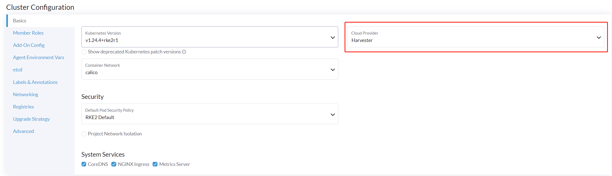
Starting with Rancher v2.9.0, you can configure a specific folder for cloud config data using the Data directory configuration path field.
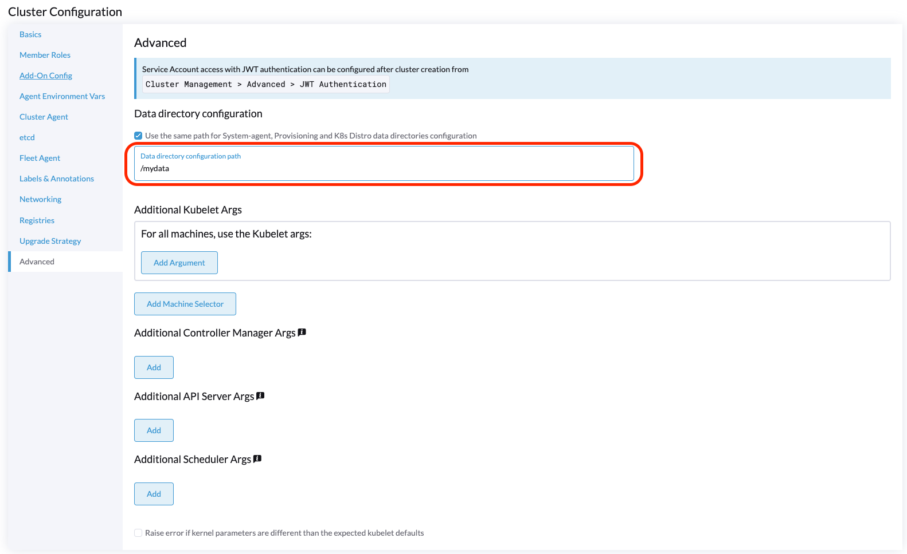
Manually deploying to the RKE2 cluster
-
On the RKE2 cluster creation page, go to the Cluster Configuration screen and set the value of Cloud Provider to External.
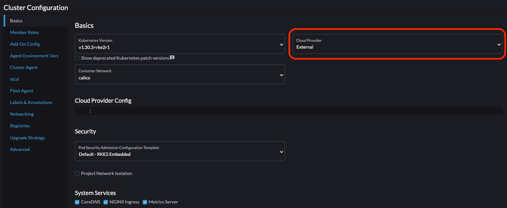
-
Copy and paste the
cloud-init user datacontent to Machine Pools > Show Advanced > User Data.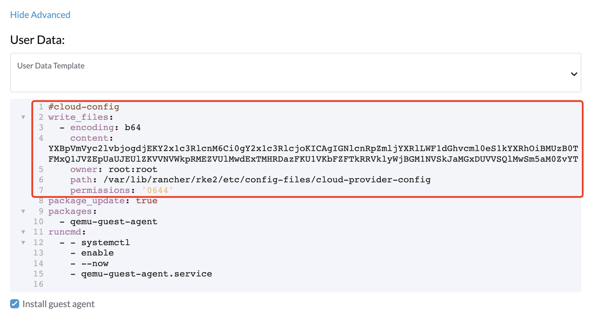
-
Add the
HelmChartCRD forharvester-cloud-providerto Cluster Configuration > Add-On Config > Additional Manifest.You must replace
<cluster-name>with the name of your cluster.apiVersion: helm.cattle.io/v1 kind: HelmChart metadata: name: harvester-cloud-provider namespace: kube-system spec: targetNamespace: kube-system bootstrap: true repo: https://raw.githubusercontent.com/rancher/charts/dev-v2.9 chart: harvester-cloud-provider version: 104.0.2+up0.2.6 helmVersion: v3 valuesContent: |- global: cattle: clusterName: <cluster-name>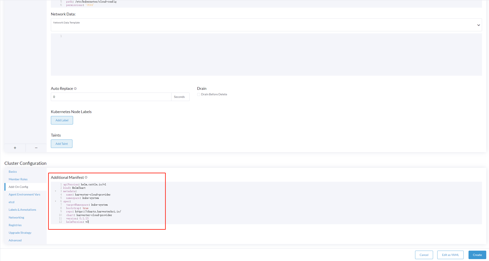
-
To create the load balancer, add the annotation
cloudprovider.harvesterhci.io/ipam: <dhcp|pool>.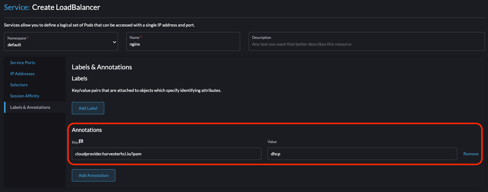
Deploying to the RKE2 custom cluster (experimental)
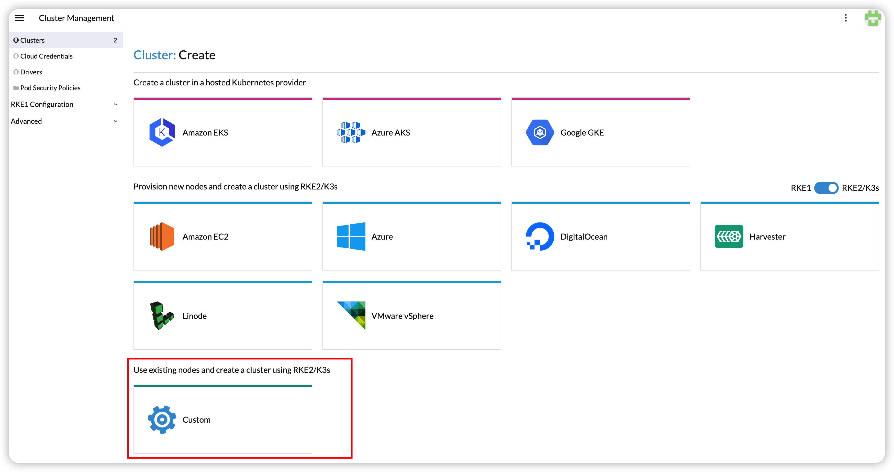
-
Generate the
cloud-configfor the SUSE Virtualization Cloud Provider. -
Create a VM in the SUSE Virtualization cluster with the following settings:
-
Basics tab: The minimum requirements are 2 CPUs and 4 GiB of RAM. The required disk space depends on the VM image.
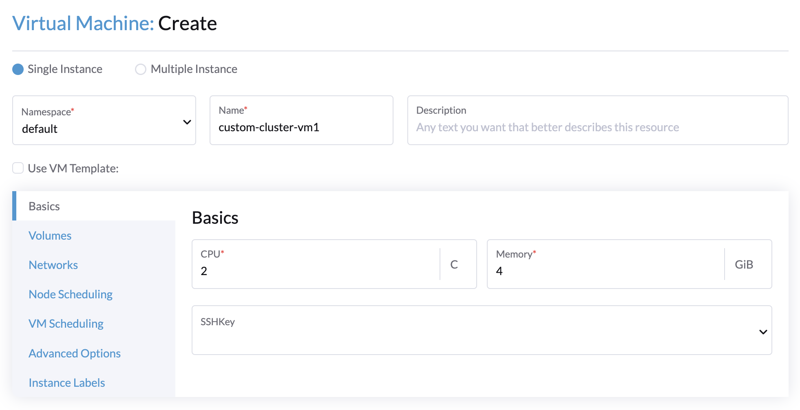
-
Networks tab: Specify a network name with the format
nic-<number>.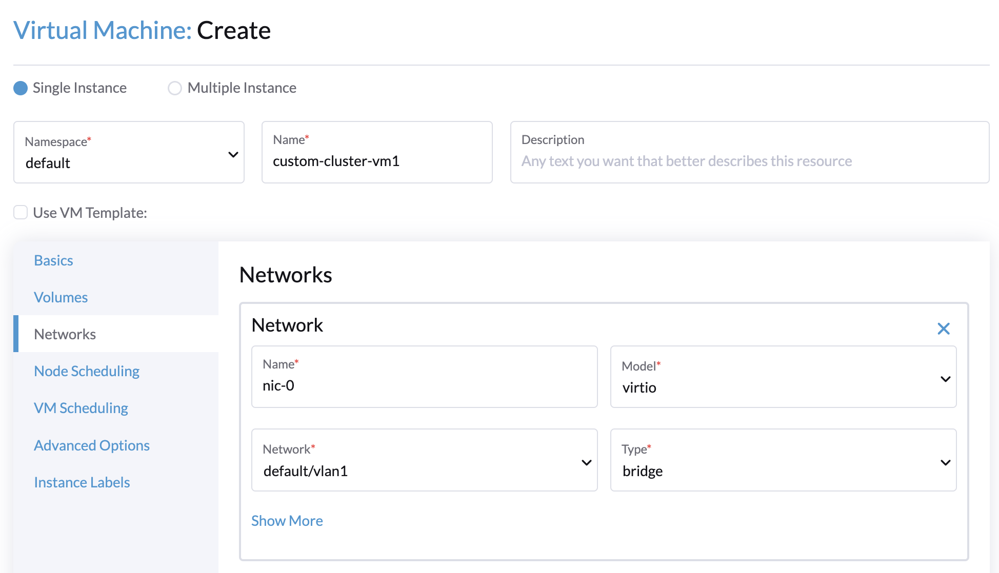
-
Advanced Options tab: Copy and paste the content of the Cloud Config User Data screen.
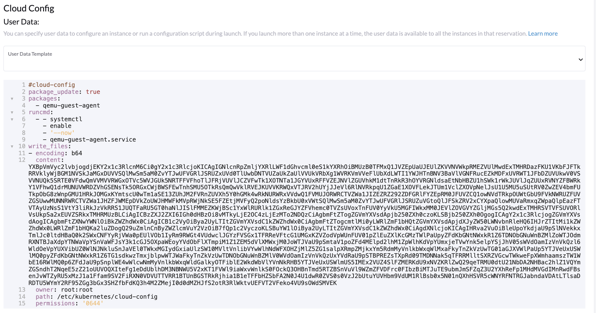
-
-
On the Basics tab of the Cluster Configuration screen, select Harvester as the Cloud Provider and then select Create to spin up the cluster.
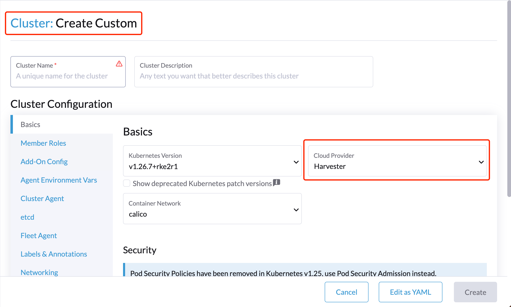
-
On the Registration tab, perform the steps required to run the RKE2 registration command on the VM.
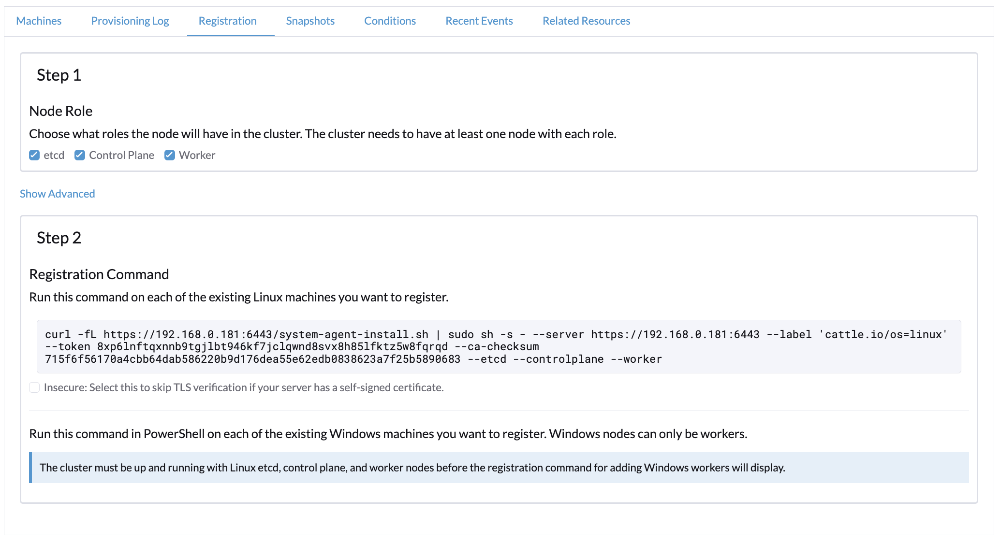
Deploying to a K3s cluster with Harvester Node Driver (experimental)
-
Copy and paste the
cloud-init user datacontent to Machine Pools > Show Advanced > User Data. -
Add the following
HelmChartyaml ofharvester-cloud-providerto Cluster Configuration > Add-On Config > Additional Manifest.apiVersion: helm.cattle.io/v1 kind: HelmChart metadata: name: harvester-cloud-provider namespace: kube-system spec: targetNamespace: kube-system bootstrap: true repo: https://charts.harvesterhci.io/ chart: harvester-cloud-provider version: 0.2.12 helmVersion: v3
-
Disable the
in-treecloud provider in the following ways:-
Click the
Edit as YAMLbutton.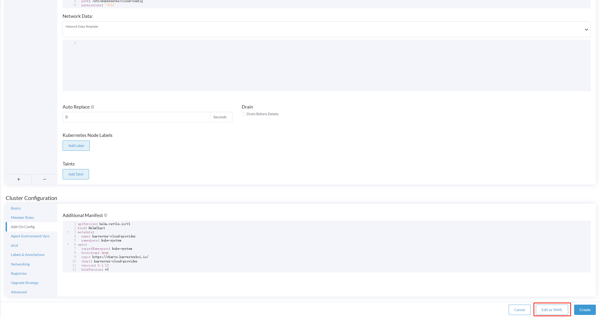
-
Disable
servicelband setdisable-cloud-controller: trueto disable the default K3s cloud controller.machineGlobalConfig: disable: - servicelb disable-cloud-controller: true -
Add
cloud-provider=externalto use the Harvester Cloud Provider.machineSelectorConfig: - config: kubelet-arg: - cloud-provider=external protect-kernel-defaults: false
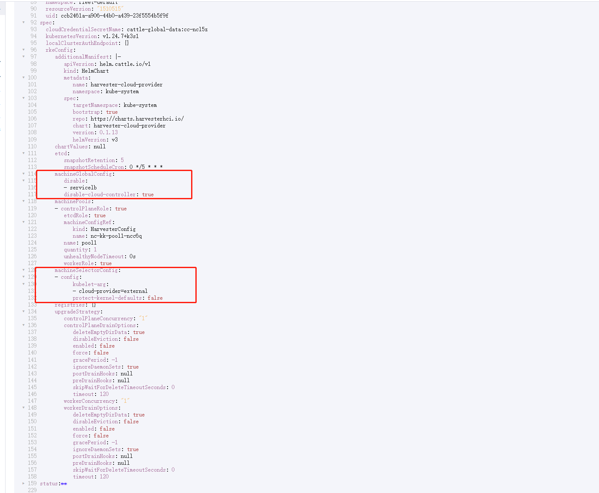
-
With these settings in place a K3s cluster should provision successfully while using the external cloud provider.
Generating the cloud-config for the Harvester Cloud Provider
The Harvester Cloud Provider requires a cloud-config file to connect to the remote SUSE Virtualization cluster (for example, to query virtual machine information or allocate load balancers). You can generate this file using either the API endpoint or a bash script.
|
Support for the bash script method will be deprecated in a future release. Use the API endpoint to ensure long-term compatibility. |
-
API
-
Bash Script
You can send POST and GET requests to the SUSE Virtualization API endpoint /v1/harvester/kubeconfig using an admin bearer token.
==== Request parameters
| Parameter | Type | Description | Example |
|---|---|---|---|
|
String |
Target namespace in SUSE Virtualization where the guest cluster is deployed. |
|
|
String |
Name of the ServiceAccount created for |
|
|
String |
ClusterRole to bind to the service account (optional) |
|
|
String |
Output format |
|
|
==== POST request
Add -k/--insecure to the curl command only if your SUSE Virtualization endpoint uses a self-signed certificate.
curl -X POST \
-H "Authorization: Bearer token-abcde:..." \
-H "Content-Type: application/json" \
-d '{"namespace": "gc-test", "serviceAccountName": "gc4", "outputFormat": "yaml"}' \
"https://<vip>/v1/harvester/kubeconfig"==== POST response
########## cloud-init user data ############
write_files:
- encoding: b64
content: <BASE64_CONTENT>
owner: root:root
path: /etc/kubernetes/cloud-config
permissions: '0644'
- encoding: b64
content: <BASE64_CONTENT>
owner: root:root
path: /var/lib/rancher/rke2/etc/config-files/cloud-provider-config
permissions: '0644'==== GET request
Use a single ampersand (&) to separate query parameters.
curl -X GET \
-H "Authorization: Bearer token-abcde:..." \
"https://<vip>/v1/harvester/kubeconfig?namespace=gc-test&serviceAccountName=gc4&outputFormat=yaml"==== GET response
The API response automatically includes cloud-init configurations for both legacy and new paths. Before applying this configuration, remove the block that does not apply to your environment.
########## cloud-init user data ############
write_files:
- encoding: b64
content: <BASE64_CONTENT>
owner: root:root
path: /etc/kubernetes/cloud-config
permissions: '0644'
- encoding: b64
content: <BASE64_CONTENT>
owner: root:root
path: /var/lib/rancher/rke2/etc/config-files/cloud-provider-config
permissions: '0644'The script requires kubectl and jq to interact with the SUSE Virtualization cluster, and functions only when given access to the cluster’s kubeconfig file.
-
Generate the cloud-config data using the
generate_addon.shscript.curl -sfL https://raw.githubusercontent.com/harvester/cloud-provider-harvester/master/deploy/generate_addon.sh | bash -s <serviceaccount name> <namespace> -
Copy the generated data to every node.
-
Legacy path:
/etc/kubernetes/cloud-config -
RKE2 default path (v1.9.0 and later):
/var/lib/rancher/rke2/etc/config-files/cloud-provider-config
-
You can find the kubeconfig file on any SUSE Virtualization management node at the following path: /etc/rancher/rke2/rke2.yaml. Before using the kubeconfig file, you must replace the IP address in the server: field with your cluster’s VIP address.
Example of content:
apiVersion: v1
clusters:
- cluster:
certificate-authority-data: <redacted>
server: https://127.0.0.1:6443
name: default
# ...You must specify the namespace in which the guest cluster will be created.
Example of output:
########## cloud config ############
apiVersion: v1
clusters:
- cluster:
certificate-authority-data: <CACERT>
server: https://HARVESTER-ENDPOINT/k8s/clusters/local
name: local
contexts:
- context:
cluster: local
namespace: default
user: harvester-cloud-provider-default-local
name: harvester-cloud-provider-default-local
current-context: harvester-cloud-provider-default-local
kind: Config
preferences: {}
users:
- name: harvester-cloud-provider-default-local
user:
token: <TOKEN>
########## cloud-init user data ############
write_files:
- encoding: b64
content: <CONTENT>
owner: root:root
path: /etc/kubernetes/cloud-config
permissions: '0644'|
In newer RKE2 versions (such as v1.33.11), the default cloud-config path is Depending on your setup, choose one of the following approaches:
|
Upgrade Cloud Provider
Upgrade RKE2
The cloud provider can be upgraded by upgrading the RKE2 version. You can upgrade the RKE2 cluster via the Rancher UI as follows:
-
Click ☰ > Cluster Management.
-
Find the guest cluster that you want to upgrade and select ⋮ > Edit Config.
-
Select Kubernetes Version.
-
Click Save.
Upgrade K3s
K3s upgrade cloud provider via the Rancher UI, as follows:
-
Click ☰ > K3s Cluster > Apps > Installed Apps.
-
Find the cloud provider chart and select ⋮ > Edit/Upgrade.
-
Select Version.
-
Click Next > Update.
|
The upgrade process for a single-node guest cluster may stall when the new For more information, see this GitHub issue comment. To address the issue, manually delete the old |
Guest node instance metadata
When registering and updating guest nodes, harvester-cloud-provider queries the SUSE Virtualization API server to inspect the underlying VirtualMachine (VM) and VirtualMachineInstance (VMI) objects. It constructs the standard cloudprovider.InstanceMetadata struct by targeting three key metadata elements from the VMI:
-
Provider identifier (
ProviderID): Sets a globally unique identifier for the guest node based on the underlying SUSE Virtualization virtual machine’s UID.-
Format:
harvester://<vm.UID> -
Purpose: Allows Kubernetes to deterministically map the guest
Nodeobject back to its physical SUSE Virtualization VM resource.
-
-
Topology metadata (
RegionandZone): Reads topology annotations set on theVMIobject to establish placement context for Kubernetes scheduling.-
Region: Extracted from the
topology.kubernetes.io/regionannotation. -
Zone: Extracted from the
topology.kubernetes.io/zoneannotation. -
Fallback: If the VMI lacks topology annotations,
ProviderIDis still reported while region/zone fields remain unset.
-
-
Node addresses (
NodeAddresses): Constructs the complete address list ([]v1.NodeAddress) for the guest node by combining hostname mapping with VMI status discovery.-
Host Name (
NodeHostName): Setsv1.NodeHostNamedirectly using the targetnode.Name. -
IP Discovery (
InternalIP&ExternalIP): Evaluates active network interface IPs reported directly in the VMI status alongside provider configuration—eliminating the need for host-level probes or hardcoded NIC assumptions. -
Deterministic Mapping: Assigns detected IPs to
InternalIPandExternalIPtypes, providing a consistent source of truth for downstream intra-cluster networking and load balancer traffic routing.
-
|
To filter or customize the virtual machine network interfaces and IP ranges reported as node addresses, see Extra arguments. |
Load balancer support
Once you’ve deployed the Harvester Cloud Provider, you can leverage the Kubernetes LoadBalancer service to expose a microservice within the guest cluster to the external world. Creating a Kubernetes LoadBalancer service assigns a dedicated SUSE Virtualization load balancer to the service, and you can make adjustments through the Add-on Config within the Rancher UI.
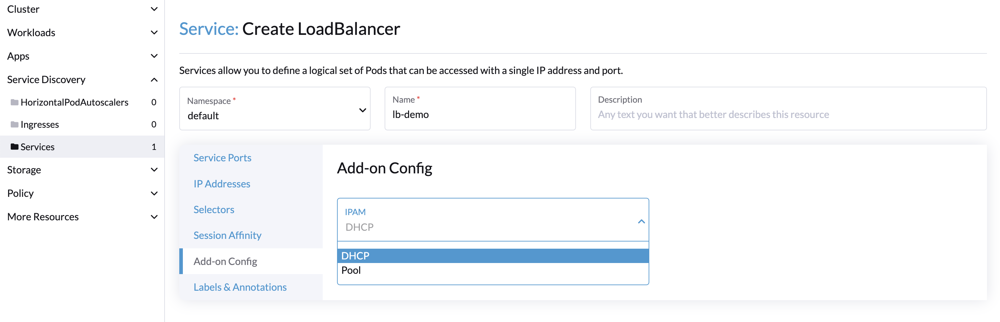
IPAM
SUSE Virtualization’s built-in load balancer offers both DHCP and Pool modes, and you can configure it by adding the annotation cloudprovider.harvesterhci.io/ipam: $mode to its corresponding service. Starting from Harvester Cloud Provider >= v0.2.0, it also introduces a unique Share IP mode. A service shares its load balancer IP with other services in this mode.
-
DHCP: A DHCP server is required. The SUSE Virtualization load balancer will request an IP address from the DHCP server.
Starting with Rancher v2.15.1, you can select a VM network when creating a
LoadBalancerservice using the UI. This enables explicit binding of the virtual IP to the correct network interface. If you do not select a VM network, the load balancer uses the default interface.In earlier Rancher versions (v2.12.x, v2.13.x, and v2.14.x), you can achieve the same result by adding the following annotations to the
Servicemanifest:-
cloudprovider.harvesterhci.io/ipam: "dhcp" -
cloudprovider.harvesterhci.io/network: "default/mgmt-vlan1"
-
-
Pool: A pre-configured IP pool is required. The SUSE Virtualization load balancer controller allocates an IP for the load balancer service according to the IP pool selection policy. You can create IP pools using either the SUSE Virtualization UI or the Rancher UI. For more information, see Best practices.
Starting with Rancher v2.15.1, you can select a VM network when creating a
LoadBalancerservice using the UI. This enables explicit binding of the load balancer to the correct network interface. If you do not select a VM network (specifically, thecloudprovider.harvesterhci.io/networkis empty), the load balancer controller automatically determines the network to be used.On earlier Rancher versions (v2.12.x, v2.13.x, and v2.14.x), you can achieve the same result by adding the following annotations to the
Servicemanifest:-
cloudprovider.harvesterhci.io/ipam: "ippool" -
cloudprovider.harvesterhci.io/network: "default/mgmt-vlan1"The remote SUSE Virtualization cluster must run v1.9.0 or later to support custom
cloudprovider.harvesterhci.io/networkconfigurations in the Harvester Cloud Provider.When a guest cluster uses multiple networks, or when multiple guest clusters with distinct networks share a single namespace, configuring the correct network parameters is critical. For information about how the system automatically determines the network, see Guest cluster load balancer network resolution.
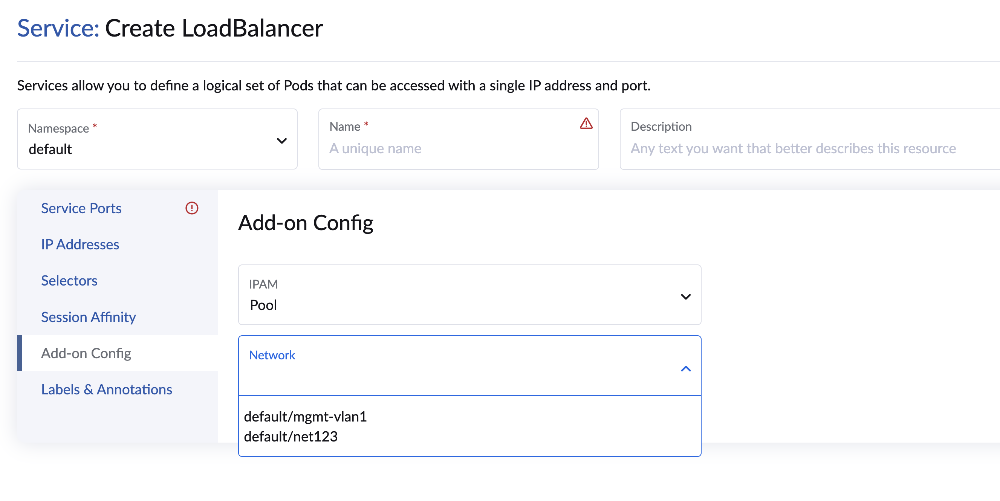
-
-
Share IP: When creating a new load balancer service (secondary service), you can reuse the IP address of an existing service (primary service). To specify the primary service, add the annotation
cloudprovider.harvesterhci.io/primary-service: $primary-service-nameto the secondary service.This mode has two known limitations:
-
Services sharing the same IP address cannot use identical ports.
-
Secondary services cannot share their IP with additional services.
-
|
Modifying the IPAM mode of an existing service is not supported. To use a different IPAM mode, create a new load balancer service. |
Asymmetric network topology
The network dropdown list on the UI displays only networks assigned to the exact same interface position across all cluster nodes.
Example:
| Network-Interface Mapping | UI Behavior | Node A | Node B | Displayed Networks |
|---|---|---|---|---|
Identical mapping across all nodes |
All networks are displayed |
|
|
|
Network in different interface positions across nodes |
Network is hidden |
|
|
|
Network absent on some nodes |
Network is hidden |
|
|
|
Swapped interface mapping order |
Only matching networks are displayed |
|
|
|
|
If VM network interfaces are attached in different orders across nodes, reconfigure the network interface order in the machine pool settings to allow Rancher and RKE2 to reprovision the guest cluster virtual machines. |
Limitations
-
Default load balancer provider:
kube-vipis selected by default on the UI. If you disablekube-vipand use an alternative provider, refer to that provider’s documentation for configuration instructions. -
Pre-condition for secondary network load balancing: The secondary network interface of each guest cluster node must have a valid IP address and route. Otherwise, the load balancer cannot route traffic. Verifying this interface configuration should be the first step when troubleshooting issues related to secondary network load balancers.
-
Load balancer network changes: Delete and recreate the load balancer service if you require changes to the load balancer network. Modifying the network annotation on an existing service may cause unexpected behavior and is not supported.
-
Incorrect network annotation: The load balancer may fail to obtain an IP address or become unreachable if you directly configure the
cloudprovider.harvesterhci.io/networkannotation and specify a network that is either invalid or exhibits an asymmetric network topology. Because webhook validation is not performed on this annotation, select the target network on the UI instead. -
Secondary network load balancer traffic isolation: Incoming traffic arrives on the secondary network interface and undergoes NAT to the pod network. Consequently, only workloads listening on the pod network can receive load balancer traffic. Workloads configured to listen exclusively on the secondary network interface cannot. Full traffic isolation is currently unsupported.
Health checks
Beginning with Harvester Cloud Provider v0.2.0, additional health checks of the LoadBalancer service within the guest Kubernetes cluster are no longer necessary. Instead, you can configure liveness and readiness probes for your workloads. Consequently, any unavailable pods will be automatically removed from the load balancer endpoints to achieve the same desired outcome.
Automatic cleanup
When you delete a guest cluster that has the Harvester Cloud Provider enabled, SUSE Virtualization automatically cleans up all associated LoadBalancer resources. This offers the following key benefits:
-
Resource management: Automatic cleanup prevents orphaned load balancers from consuming IP addresses after the guest cluster is deleted.
-
Zero manual intervention: The lifecycle of the load balancer is tied directly to the lifecycle of the guest cluster.
Stale cloud credentials after cluster registration
If you remove a SUSE Virtualization cluster from Rancher and later re-register the same cluster, Rancher may retain stale cloud credentials that reference the previous management cluster ID. This mismatch causes provisioning of guest clusters (such as RKE2 and K3s clusters) to fail.
When this issue occurs, the system logs an error similar to the following:
clusters.management.cattle.io "<old-cluster-id>" not foundThe failure occurs because the existing cloud credential still points to the original SUSE Virtualization cluster ID, which no longer exists after the re-registration process.
To mitigate the issue, perform the following workaround:
-
On the Rancher UI, go to ☰ → Cluster Management → Cloud Credentials.
-
Delete the stale cloud credential associated with the removed SUSE Virtualization cluster.
-
Create a new cloud credential using the updated SUSE Virtualization cluster details.
-
Provision the guest cluster again.
Related issue: #53642